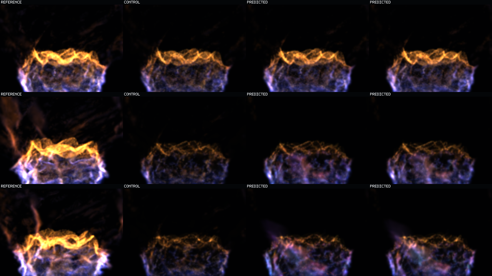
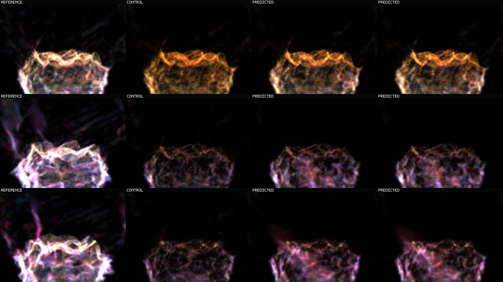

Question: Does late recurrent fire improve more from longer chains, denser predicted exposure, or stronger visible-energy loss?
Answer: longer chains. H12 beats H4, E875, and W050 on every final-quarter state cohort while support remains exactly identical.
Visual boundary: H12 remains coherent but its sampled appearance delta from H4 is subtle. This is a measured horizon extension, not a dramatic visual reconstruction.
Rows are time: `0.16 s`, `5.12 s`, `10.08 s`. Columns are exact reference, copied control, H4 prediction, H12 prediction. Both prediction tiles say `PREDICTED` because they originate in separate matched three-role witnesses.

Same chronology and columns under the display-only motion-cohort mix at requested/effective gain `0.625`. The mix does not mutate model state.

Both videos are finite `63`-frame sequences at `160 ms` cadence. Within each video: left reference, middle control, right prediction.
Same roles, state, and cadence with display-only gain `0.625`.
Final-quarter prediction/control state-MSE, H4 to H12: Q4 `1.0356 → 0.9948`; transported `1.0793 → 1.0275`; birth `1.1028 → 1.0542`. E875 lands between H4 and H12. W050 is slightly worse than H4.
H12 final-quarter energy retention is Q4 `0.2047`, transported `0.1896`, birth `0.1950`; W050 does not materially increase any of them. The tested failure is distributional depth, not insufficient scalar energy weight.
One held-out basin, isolated offline splat raster. This identifies the strongest tested training pressure but does not prove analytical-raymarch agreement, cross-basin generalization, indefinite stability, runtime integration, or operator acceptance.